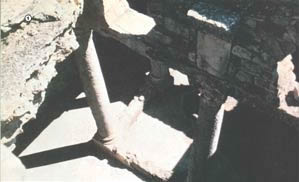
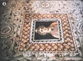
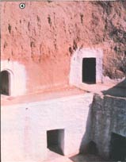
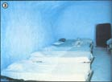

Here's a little more evidence that there "ain't nothin' new under the sun"!
Moles have holes, and humans have houses ... at least, that's what a good number of today's folks seem to believe. However, some pragmatic home designers and builders (many of whom have been featured in this magazine) are setting out to prove that we should change our thinking ... since concerns about petroleum prices and pollution have caused a number of homeowners - though in greater comfort and style than any other burrowing creatures - to move underground. But even those people who are up-to-date on the latest earth-shelter designs might be surprised to learn that subsurface living is actually a very old idea.
Several ancient cultures experimented with the use of subterranean dwellings . . . but no country's history provides more evidence of the practicality - and beauty - of a belowground lifestyle than does that of the tiny North African republic of Tunisia. Travelers to this thumb-shaped nation on the northernmost point of Africa can see how residents here - past and present - have used earth-sheltering to cope efficiently with their environment.
The remains of Bulla Regia, which was a rich Roman town during the early years of the Christian era, can be found in the green Tell (coastal) region ... close to the Algerian border. Back in the days of Rome's "bread and circuses", this African province supplied much of the wheat used to make the storied Latin loaves. In fact, Roman colonists (usually they were military veterans) who settled in the fertile Medjerda River basin often grew rich in the grain trade, and the exquisite underground villas that their wealth allowed them to construct are now unique tourist attractions.
The transplanted Romans, who loved beauty and comfort - but not African summers - faced a dilemma: The same sun that ripened their grain caused them great discomfort. They remembered, however, that country houses in the hotter sections of Italy had long incorporated earth-covered "summer bedrooms", and the colonists simply carried the homeland idea a step further . . . by designing entire warm-weather houses underneath their aboveground winter dwellings.
By placing their summer quarters below the earth's surface, the ancient innovators were able to take advantage of the insulation provided by the surrounding soil .. . and, by directing air through vents in the cooling earth, they made the homes more comfortable still. (The combination resulted in a natural air conditioning system with no mechanical parts to break down and no power bills!)
But mere shelter from the heat wasn't enough to satisfy members of such a highly civilized culture, so the Romans added aesthetic touches: columns, pools, fountains, arches, wall paintings, and mosaics. In short, the softly lighted underground homes became showplaces in which provincial wheat farmers spent the hot seasons in comfort, surrounded by beauty.
Furthermore, it's still possible to judge just how comfortable the ancient homeowners were, although almost 2,000 years have passed. Not long ago - on an afternoon when only an occasional palm raised a browned and feathery frond above the parched countryside, and heifers tried to find sleep in the shade of ancient walls - a native guide led my tour group down the stairs to such an underground villa. Maybe the Latins would have sighed, " Ah, refrigeratio! " upon entering . . . but we exclaimed, "What a relief!" The temperature was at least 20 degrees cooler than that of the outside air!
Interestingly enough, most of Caesar's subjects who settled in Bulla Regia used one of three basic floor plans: [1] a vestibule running along three contiguous main rooms whose rear windows opened - in common - onto a large, deep air shaft, [2] a central courtyard, or peristyle, surrounded by rooms that had aboveground windows and openings in their ceilings, and [3] a hallway with shallow rooms on either side that incorporated windows set high in the upper walls. (The basement dwellings, though often smaller than those on the surface, frequently duplicated portions of the structures' ground-level floor plans.)
The "House of Amphitrite" is a large version of the first design. (In addition to the three main rooms, it has two tiny chambers situated across the vestibule.) This residence, the floor of which is almost 17 feet below ground level, still retains some stucco wall panels and mosaics.
The inlaid lobby floor - picturing a female face framed by a leafy border - is in a state of excellent preservation, and visitors can still see where a marble fountain was once embedded in a nearby wall. The large central dining room has two columns facing the entryway, a vaulted ceiling, and a pastel floor mosaic portraying the "Triumph of the Marine Venus". (Years ago, an erroneous identification of the pictured goddess as Amphitrite, wife of Neptune, gave the house its name.)
A dwelling known as the "Hunting Palace" is typical of Plan Two. Below the spacious courtyard (almost 27 by 32 feet) on the main floor, eight 16-foot-high Corinthian columns support the ground-level ceiling ... which is pierced with hexagonal openings to serve as air and light sources for the underground peristyle.
The rooms open to the north and west. Three bays, which are separated by two large columns, give access to a large dining room, whose decorated floor covers a circular storage cistern more than four feet in diameter. Baked earthen pipes in the ridged molding of the arched ceiling empty into the reservoir.
Simple mosaics and raised platforms indicate the one-time placement of beds in three sleeping chambers, which are copies of those upstairs. (Most of the rooms are rectangular, with two ceiling holes apiece to admit light and air.)
One good example of the third floor plan is the "House of the Peacock". Fourteen steps descend about ten feet . . . to a passageway with rooms on both sides. The first chamber to the left is a sleeping room: It was identified as such on the basis of the bed platform against the back wall. The large room to the right opens - on the south side - to a smaller chamber which has an apse with an almost effaced peacock mosaic.
(Across the road from "the Peacock" is another interesting Plan-Three house. Its ingenious owner simply transformed two pre-existing deep cisterns into rooms when the family decided to "move down".)
But northwest Tunisia isn't the only place in the nation that's known for underground living. In the hills of the great desert that lies to the south, some 12,000 Berbers live in the earth .. . 3,000 in the town of Matmata alone. This barren terrain looks like Star Wars country, and - in fact - the "props" left here and there are reminders that movie cameras once recorded space fantasies in this desert.
Evidence of day-to-day life is usually first seen in the form of smoke escaping from the holes that pock the "lunar" land scape. The Berbers' dwellings are located around bowl-shaped depressions, perhaps 33 feet in diameter by 20 to 25 feet in depth. Families escape the elements in rooms carved into the rims of the craters: small cocoons in the rock - reached by descending stairs or ramps - which are cool in hot weather and warm in chilly times.
The tattooed Berber women are proud of their homes. Whitewashed walls and earthen floors, kept tidy by repeated scrubbings and sweepings, take the place of the ancient Romans' mosaics and marble . . . and the result is clean, cool, and inexpensive housing.
Tourists can even sample subsoil living themselves . . . in Matmata's two "crater" hotels. I recommend the Sidi Driss, which has 27 rooms - some with baths - connected by tunnels. Guests can sip tea in an enclosure ringed with white and ocher walls, and retire to pleasant chambers that are cooled by air flowing from the courtyard and corridors.
Underground housing may be part of a dreamed-about future for many of us, but in North African Tunisia it's a part of the past . . . and the present!
|
 The underground courtyard of a Roman villa in Bulla Regia |
 An intricate floor mosaic in the ""House of Amphritrite"". |
 Multilevel living in Matmata, where living quarters have been built into crater walls. |
|
 A subterranean bedroom in the Sidi Driss Hotel |
|
|